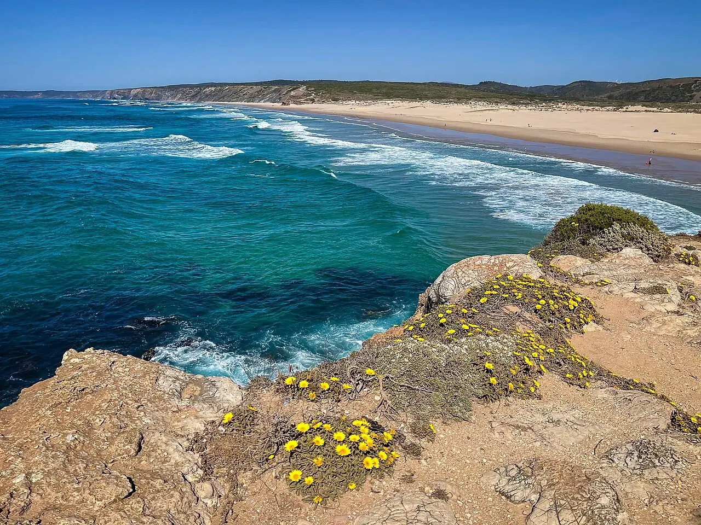

Praia da Bordeira
Carrapateira, Portugal · surf

Une vaste plage près de Carrapateira. Bordeira associe paysage dunaire et côte ouverte sur l’Atlantique.
- Lieu
- Carrapateira, Portugal
- Niveau
- Variable selon les conditions
- Activités
- surf
- Type d'eau
- Mer / océan
- Coordonnées
- 37.20, -8.90 (position approximative du secteur)
Ouvrir dans Ocean Buddy Télécharger sur l'App Store
Source : Visit Portugal.